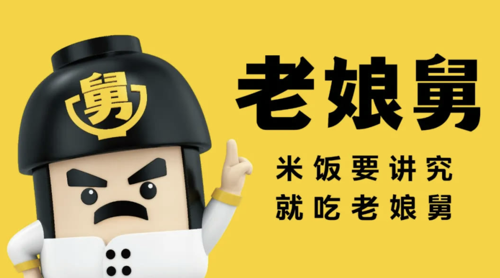
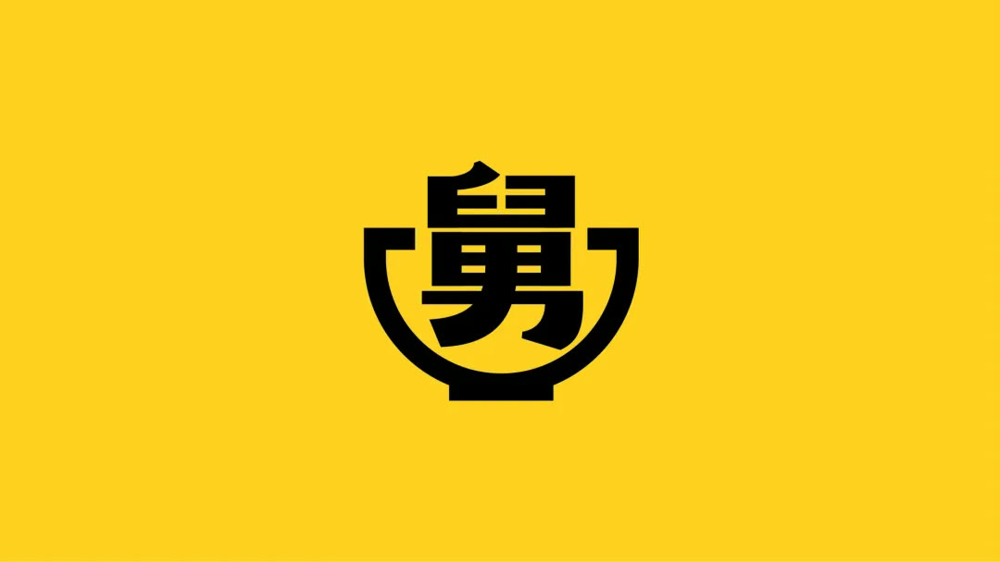
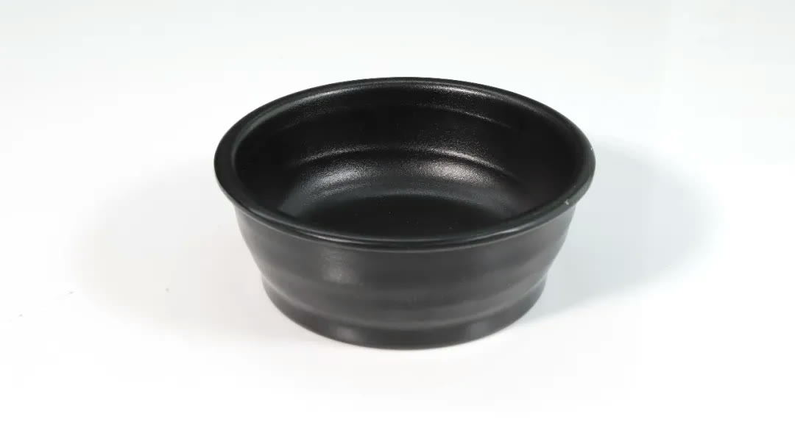

01 · 战略
顶层设计不是口号，而是后续决策标准
企业战略、品牌定位和核心话语先形成统一原点，产品、活动和门店改造才能判断什么该做、什么不该做。

02 · 节奏
用两大营销节日建立年度经营节拍
固定节日把产品、门店、传播与组织行动集中在明确节点。持续重复比每次追逐新主题更容易形成顾客记忆。

03 · 餐具
让工业设计进入每一次用餐体验
餐具不仅承载食物，也影响出品、识别和顾客拍照传播。设计围绕真实使用、后厨效率与品牌资产共同展开。

04 · 空间
门店空间是连锁业务的深水区
空间需要同时解决动线、效率、识别和复制。项目把品牌视觉落实到具体经营条件，使门店既能传播，也能稳定运营。